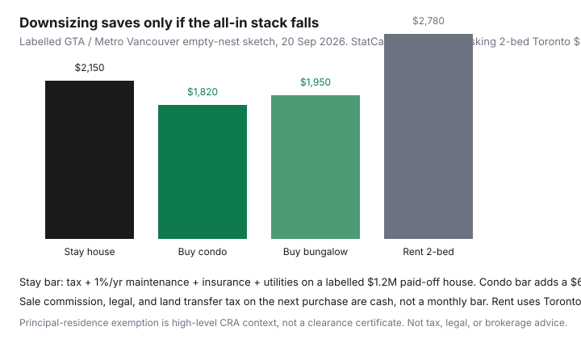

Housing · Canada
Downsizing in Canada: when selling the family home actually saves shelter cost
Empty-nesters treat a listing price as freed cash. The house is “too big,” so selling it must shrink the shelter line. In the Greater Toronto Area and Metro Vancouver that is only true if the all-in monthly stack actually falls after sale costs, the next property’s tax and condo fees, and the opportunity cost of the equity you just spent on a smaller place with a larger corporation invoice.
Date-stamped rent context: Statistics Canada’s Quarterly Rent Statistics for Q2 2026 (Daily, 9 Sep 2026, program run with CMHC) put average asking two-bedroom rent at $2,650 in Toronto and $3,030 in Vancouver. Paid two-beds were lower ($2,160 / $2,470). A downsizer who sells and rents faces asking, not the sitting-tenant CPI rent print (+2.8% nationally, Daily 14 Sep 2026).
Disclosure: Mortgage-rate tools (if you still carry a loan), moving-quote marketplaces, and home-insurance comparison tools are offer types. Saving Optimizer may earn a commission if we later add partner links. We do not currently claim lender, mover, realtor, or insurer partnerships. This is not tax, legal, or brokerage advice.
Key takeaways
- Stay cost is tax + maintenance reserve + insurance + utilities — not “the mortgage is paid.”
- Labelled $1.2M paid-off house ≈ $2,150/month all-in. Labelled $650k condo with a $650 fee ≈ $1,820.
- Sale friction is real: 5% + 13% HST on $1.2M is $67,800 before legal and moving.
- Ontario first-time LTT refunds ($4,000 / Toronto $4,475) usually do not apply to a second purchase.
- A suite in the existing house can win if the extra work and tax reporting are honest.
All-in costs of staying: tax, maintenance, insurance, opportunity cost
Write four lines before anyone books photos. A labelled $1.2 million suburban detached that is paid off still invoices:
| Line | Annual | Monthly |
|---|---|---|
| Property tax (0.70% sketch) | $8,400 | $700 |
| Maintenance reserve (1% of value) | $12,000 | $1,000 |
| Home insurance | $1,800 | $150 |
| Heat, hydro, water, internet | $3,600 | $300 |
| Stay all-in | $25,800 | $2,150 |
The 1% reserve is the same placeholder as the condo vs freehold and year-one cash pages — adjust down for a new roof, up for 1970s brick. Opportunity cost sits beside that stack: $1.2 million of after-sale equity could earn something in a diversified account. We will not invent a 2026 return. Write a conservative after-tax yield you actually believe, then compare it to the monthly gap you think downsizing creates.
Condo vs bungalow vs rental after sale
Three landing pads, same remaining household:
- Condo / strata apartment. Smaller tax and insurance, a fee that never amortises, and a status certificate or Form B that can hide a special. CMHC’s consumer home-buying pages still start with the disclosure package. A labelled $650 fee + $280 tax + $55 unit insurance + $180 hydro/internet + $650 special reserve/12 ≈ $1,820 if there is no mortgage. Read condo fee red flags before you celebrate the smaller lawn.
- Bungalow or townhouse. You still own the envelope. Tax and the 1% reserve shrink with price, not to zero. A labelled $750,000 bungalow at 0.70% tax + 1% reserve + $140 insurance + $260 utilities ≈ $1,950. Stairs disappear; gutters do not.
- Rent after sale. Toronto asking 2-bed $2,650 (StatCan QRS Q2 2026) + $80 hydro + $50 internet ≈ $2,780 before tenant insurance. Vancouver asking 2-bed $3,030 + add-ons is higher. You trade maintenance for lease risk and, in Ontario, the guideline vs exempt distinction.

Transaction costs and capital gains basics at a high level
Sale-side cash on a labelled $1.2 million close:
| Line | Labelled amount |
|---|---|
| 5% commission | $60,000 |
| HST 13% on commission (Ontario) | $7,800 |
| Legal, discharge, staging leftovers | $3,000 |
| Local 3-bed move band | $1,300–$2,800 (public 2026 mover explainers) |
Buy-side tax if you purchase in Toronto at a labelled $650,000: provincial LTT $9,475 + municipal LTT $9,475 = $18,950 before any refund. Empty-nesters who already owned are usually not first-time purchasers, so the $4,000 / $4,475 stack is not in the model. B.C. property transfer tax on a Metro Vancouver condo is a different schedule — use the current gov.bc.ca calculator, including any first-time band you no longer qualify for.
CRA principal-residence exemption: if the house was your principal residence for every year you owned it, the gain is generally exempt when you designate it. Two properties, a basement you rented without reporting, or years you lived in Florida can take years off the exemption. Report the disposition. This is not a T2091 walkthrough.
Timing: rates, local inventory, and moving fatigue
List when you can live with the next 90 days of showings, not when a rate meme says “now.” If you still have a mortgage, the renewal calendar and any penalty belong on the same sheet as commission. Inventory in your suburb and in the condo tower you want will not peak on the same weekend. Moving fatigue is a cost: two closings, an elevator booking, and a storage month (see storage vs a bigger unit) can erase the first year of “savings.”
Declutter and estate-planning overlap
Adult children do not need a truck of pine furniture in a 700-square-foot suite. Sell, donate, or write gifts before the listing photos. The same purge is the start of an estate conversation: who gets what, what is junk, and whether a lawyer should update the will when the address changes. Pair the physical work with the room-by-room audit if you might rent instead of buy.
Worked example for a suburban GTA or Metro Vancouver empty nest
Two adults, paid-off $1.2 million house, stay stack $2,150. They sell, net about $1,127,000 after $67,800 commission+HST and $5,200 legal/moving (mid of the 3-bed band plus legal). They buy a $650,000 Toronto condo, pay $18,950 LTT, $8,000 more closing and furniture, and park $450,000 in conservative investments. Monthly condo stack $1,820. Gap vs staying: $330/month. Year-one cash to create that gap: roughly $100,000 of friction plus a smaller, fee-heavy home. If the $450,000 is the real prize, say so — that is a net-worth move, not a shelter-cost cut. In Metro Vancouver, swap LTT for PTT and the $3,030 asking 2-bed if they rent instead; the story is the same shape.
When keeping the home and renting a suite wins instead
A lawful additional dwelling unit can turn unused bedrooms into income without a second land-transfer bill. Wins require: zoning and permits, a real insurance conversation (not a silent Airbnb), reported rental income, and a door that gives everyone privacy. Losses look like: you still shovel the driveway, the tenant’s hydro fight becomes yours, and the house you wanted to leave still owns your Saturday. If the suite math only works by skipping the 1% reserve, you did not downsize — you levered the roof.
Sources & date stamps
- Statistics Canada, Quarterly rent statistics, Q2 2026 (Daily, 9 Sep 2026) — asking 2-bed Toronto $2,650, Vancouver $3,030; paid $2,160 / $2,470.
- Statistics Canada, CPI August 2026 (Daily, 14 Sep 2026) — national rent +2.8% year over year.
- CMHC consumer home-buying pages — closing costs and condo/strata disclosure as their own pile (used 20 Sep 2026).
- ontario.ca land-transfer refund page (updated 10 Feb 2026) — first-time max $4,000; empty-nesters usually excluded.
- CRA principal-residence exemption — high-level designation on disposition; not a filing kit.
Frequently asked questions
Does selling the family home always cut Canadian shelter cost?
No. A labelled paid-off $1.2 million suburban house can still cost about $2,150 a month once you add property tax, a 1%/year maintenance reserve, insurance, and utilities. A $650,000 condo with a $650 fee can land near $1,820 — but only after you pay sale costs and land transfer tax on the next purchase. Renting a Toronto two-bedroom at the Q2 2026 StatCan asking average of $2,650 plus utilities can be the most expensive monthly stack.
What sale costs do empty-nesters forget?
Commission (often discussed as 3.5%–5% plus HST), legal fees, staging and decluttering, moving (a GTA-style 3-bed local band is sometimes cited around $1,300–$2,800), and land transfer or property transfer tax on the next place. Empty-nesters are usually not first-time buyers, so Ontario’s $4,000 provincial refund and Toronto’s $4,475 municipal rebate generally do not apply.
Is the gain on a Canadian principal residence taxable?
Often no, if the property was your principal residence for every year you owned it and you designate it on the return when you dispose of it. CRA’s principal-residence exemption is the high-level rule. Two properties, a rental suite you never reported, or years you lived elsewhere can change the math. This page is not a clearance certificate.
When does keeping the house and renting a suite win instead?
When lawful additional-dwelling rules, insurance, and tax reporting work, and the net rent covers the extra maintenance without turning you into an unpaid superintendent. If the house is already too much house for two people, a suite can still leave you with the roof, driveway, and stairs you were trying to leave.
Is this tax or real-estate advice?
No. It is a household total-cost worksheet. Mortgage tools, moving quotes, and home-insurance comparison are offer types only. A lawyer, licensed realtor, and tax advisor should review your numbers before you list.